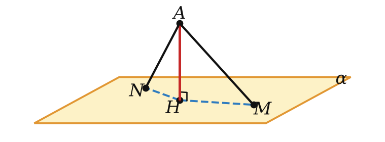
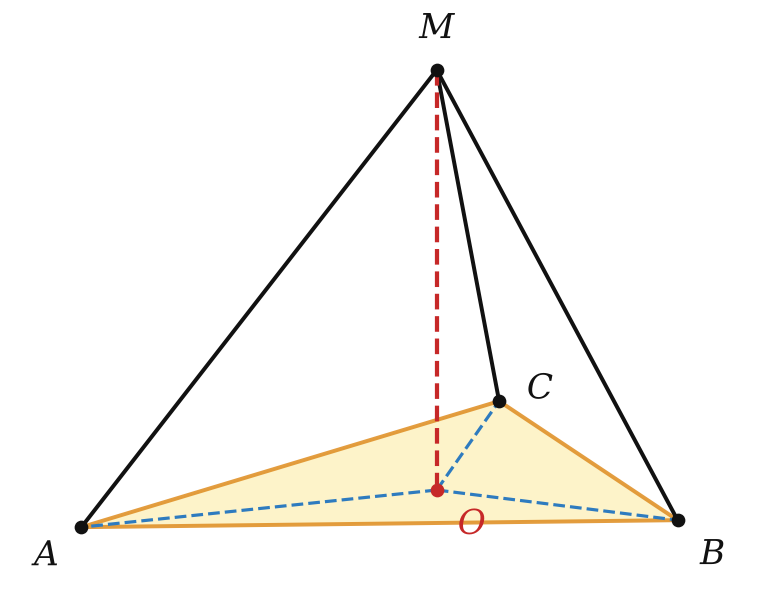
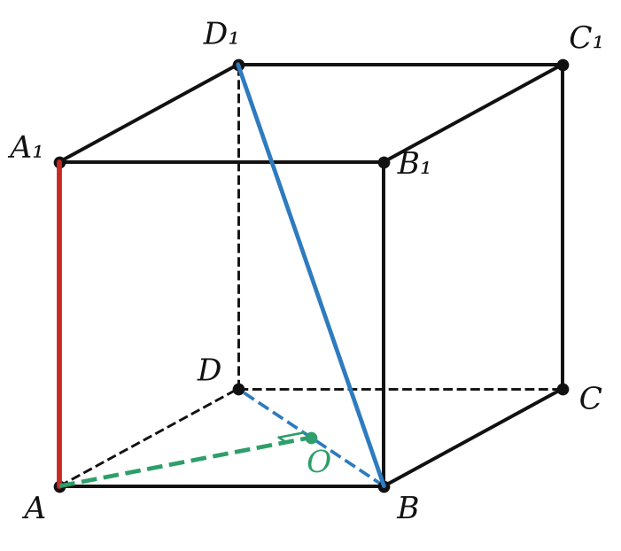

расстояния в пространстве


| от / между | это |
|---|---|
| точка — плоскость | длина перпендикуляра |
| прямая ∥ плоскость | от любой точки прямой |
| параллельные плоскости | от любой точки одной до другой |
| скрещивающиеся прямые | длина общего перпендикуляра |

Расстояние — всегда самый короткий отрезок